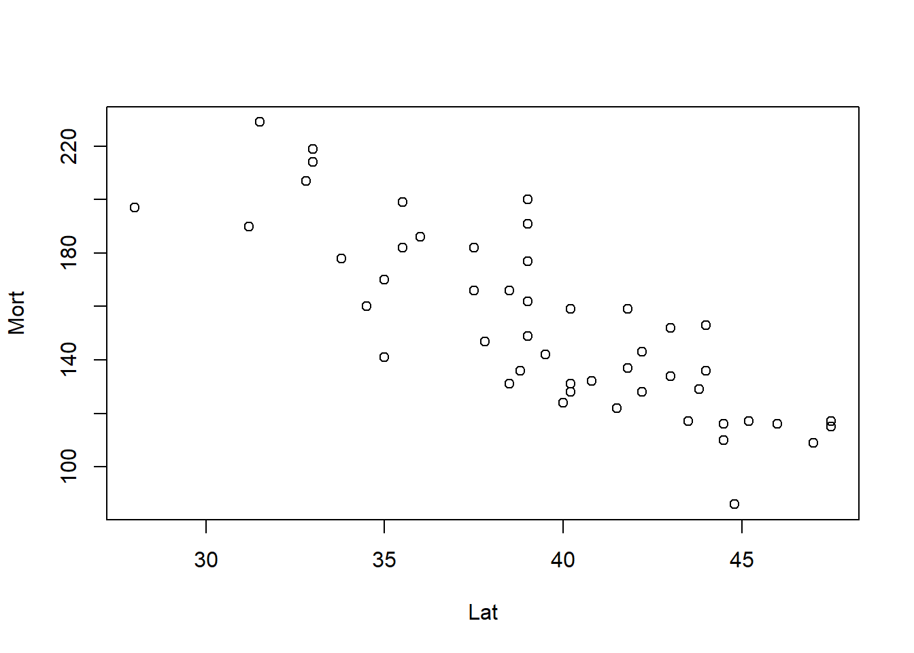
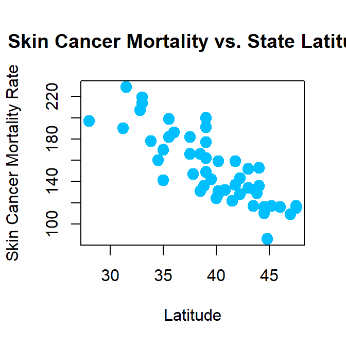
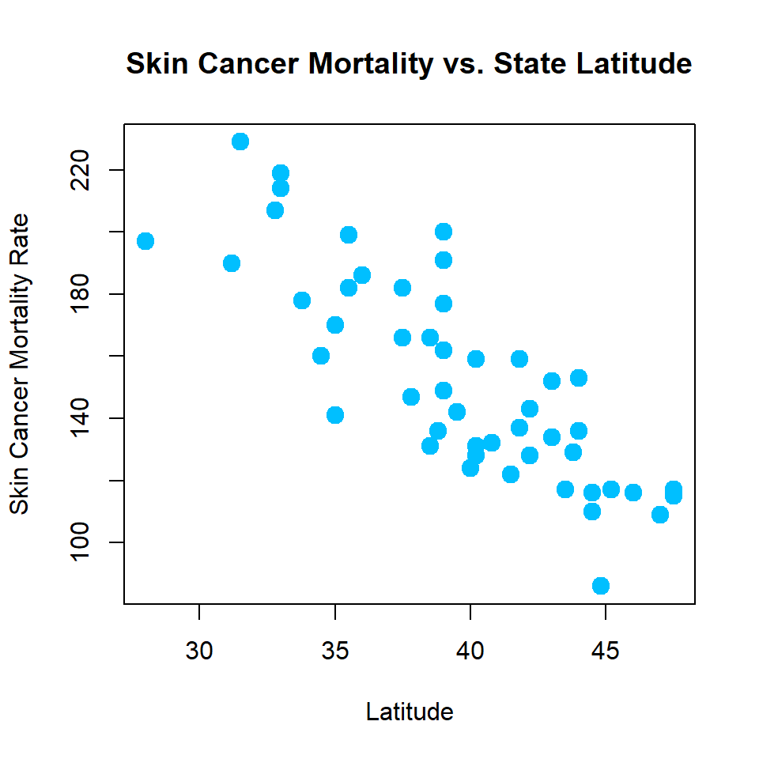

Chapter 2 RMarkdown Basics
2.1 Acknowledgement
This section was originally created by David Dalpiaz. The original file can be downloaded from his R4SL online text book. I made some slight modifications. This is by no means a comprehensive guide, and there are many other resources available online.
2.2 Getting Started
RMarkdown at its core is a combination of R and Markdown used to generate reproducible reports for data analyses.
Markdown and R are mixed together in a .Rmd file, which can then be rendered into a number of formats including .html, .pdf, and .docx. There will be a strong preference for .html in this course.
Have a look at (this source file) to see how this document was generated! It should be read alongside the rendered .html to best understand how everything works. Alternatively, you could render the .Rmd inside RStudio, and you’ll automatically have both side-by-side. You can also modify the .Rmd along the way, and see what effects your modifications have.
Formatting text is easy. Bold can be done using ** or __ before and after the text. Italics can be done using * or _ before and after the text. For example, This is bold. This is italics. and this is bold italics. This text appears as monospaced.
- Unordered list element 1.
- Unordered list element 2.
- Unordered list element 3.
- Ordered list element 1.
- Ordered list element 2.
- Ordered list element 3.
We could mix lists and links. Note that a link can be constructed in the format [display text](http link). If colors are desired, we can customize it using, for example, [\textcolor{blue}{display text}](http link).
- A default link: RMarkdown Documentation
- colored link 1:
- colored link 2:
Tables are sometimes tricky using Markdown. See the above link for a helpful Markdown table generator.
| A | B | C |
|---|---|---|
| 1 | 2 | 3 |
| Do | Re | Mi |
2.3 Adding R
So far we have only used Markdown to create html. This is useful by itself, but the real power of RMarkdown comes when we add R. There are two ways we can do this. We can use R code chunks, or run R inline.
2.3.1 R Chunks
The following is an example of an R code chunk
# define function
get_sd = function(x, biased = FALSE) {
n = length(x) - 1 * !biased
sqrt((1 / n) * sum((x - mean(x)) ^ 2))
}
# generate random sample data
set.seed(42)
(test_sample = rnorm(n = 10, mean = 2, sd = 5))## [1] 8.8547922 -0.8234909 3.8156421 5.1643130 4.0213416 1.4693774
## [7] 9.5576100 1.5267048 12.0921186 1.6864295## [1] 4.177244There is a lot going on here. In the .Rmd file, notice the syntax that creates and ends the chunk. Also note that example_chunk is the chunk name. Everything between the start and end syntax must be valid R code. Chunk names are not necessary, but can become useful as your documents grow in size.
In this example, we define a function, generate some random data in a reproducible manner, displayed the data, then ran our function.
2.3.2 Inline R
R can also be run in the middle of the exposition. For example, the mean of the data we generated is 4.7364838.
2.4 Importing Data
When using RMarkdown, any time you knit your document to its final form, say .html, a number of programs run in the background. Your current R environment seen in RStudio will be reset. Any objects you created while working interactively inside RStudio will be ignored. Essentially a new R session will be spawned in the background and the code in your document is run there from start to finish. For this reason, things such as importing data must be explicitly coded into your document.
The above loads the online file. In many cases, you will load a file that is locally stored in your own computer. In that case, you can either specify the full file path, or simply use, for example read_csv("filename.csv") if that file is stored at your working directory. The working directory will usually be the directory that contains your .Rmd file. You are recommended to reference data in this manner. Note that we use the newer read_csv() from the readr package instead of the default read.csv().
2.5 Working Directory
Whenever R code is run, there is always a current working directory. This allows for relative references to external files, in addition to absolute references. Since the working directory when knitting a file is always the directory that contains the .Rmd file, it can be helpful to set the working directory inside RStudio to match while working interactively.
To do so, select Session > Set Working Directory > To Source File Location while editing a .Rmd file. This will set the working directory to the path that contains the .Rmd. You can also use getwd() and setwd() to manipulate your working directory programmatically. These should only be used interactively. Using them inside an RMarkdown document would likely result in lessened reproducibility.
As of recent RStudio updates, this practice is not always necessary when working interactively. If lines of code are being “Output Inline,” then the working directory is automatically the directory which contains the .Rmd file.
2.6 Packages
Packages are key to using R. The community generated packages are a large part of R’s success, and it is extremely rare to perform an analysis without using at least some packages. Once installed, packages must be loaded before they are used, so again, since your environment is initialized with nothing during knitting, these must be included in your RMarkdown file.
Here we load the ggplot2 package, which should be installed interactively before knitting the file. The install command is included for reference, but commented out. It could be left uncommented, but then the package would re-install every time you knit your document.
Note that rmarkdown is actually a package in R! If R never prompts you to install rmarkdown and its associated packages when first creating an RMarkdown document, use the above command to install them manually.
2.7 Plotting
The following generates a boring plot, which displays the skin cancer mortality

This next plot, uses data from the package ggplot2 to create a more interesting plot. Notice it is huge in the resulting document, since we have modified some chunk options in the RMarkdown file to manipulate its size.
plot(Mort ~ Lat, data = example_data,
xlab = "Latitude",
ylab = "Skin Cancer Mortality Rate",
main = "Skin Cancer Mortality vs. State Latitude",
pch = 19,
cex = 1.5,
col = "deepskyblue")
But you can also notice that the labels and the plots becomes disporportional when the figure size is set too small. This can be resolved using a scalling option such as out.width = '40%, but enlarge the original figure size:

2.8 Chunk Options
We have already seen chunk options fig.height, fig.width, and out.width which modified the size of plots from a particular chunk. There are many chunk options, but we will discuss some others which are frequently used including; eval, echo, message, and warning. If you noticed, the plot above was displayed without showing the code.
Using eval = FALSE the above chunk displays the code, but it is not run. We’ve already discussed not wanting install code to run. The ? code pulls up documentation of a function. This will spawn a browser window when knitting, or potentially crash during knitting. Similarly, using View() is an issue with RMarkdown. Inside RStudio, this would pull up a window which displays the data. However, when knitting, R runs in the background and RStudio is not modifying the View() function. This, on OSX especially, usually causes knitting to fail.
## [1] "Hello World!"Above, we see output, but no code! This is done using echo = FALSE, which is often useful.
##
## Call:
## lm(formula = y ~ x)
##
## Residuals:
## Min 1Q Median 3Q Max
## -5.661e-16 -1.157e-16 4.273e-17 2.153e-16 4.167e-16
##
## Coefficients:
## Estimate Std. Error t value Pr(>|t|)
## (Intercept) 1.123e-15 2.458e-16 4.571e+00 0.00182 **
## x 1.000e+00 3.961e-17 2.525e+16 < 2e-16 ***
## ---
## Signif. codes: 0 '***' 0.001 '**' 0.01 '*' 0.05 '.' 0.1 ' ' 1
##
## Residual standard error: 3.598e-16 on 8 degrees of freedom
## Multiple R-squared: 1, Adjusted R-squared: 1
## F-statistic: 6.374e+32 on 1 and 8 DF, p-value: < 2.2e-16The above code produces a warning, for reasons we will discuss later. Sometimes, in final reports, it is nice to hide these, which we have done here. message = FALSE and warning = FALSE can be used to do so. Messages are often created when loading packages to give the user information about the effects of loading the package. These should be suppressed in final reports. Be careful about suppressing these messages and warnings too early in an analysis as you could potentially miss important information!
2.9 Adding Math with LaTeX
Another benefit of RMarkdown is the ability to add Latex for mathematics typesetting. Like R code, there are two ways we can include Latex; displaystyle and inline.
Note that use of LaTeX is somewhat dependent on the resulting file format. For example, it cannot be used at all with .docx. To use it with .pdf you must have LaTeX installed on your machine.
With .html the LaTeX is not actually rendered during knitting, but actually rendered in your browser using MathJax.
2.9.1 Displaystyle LaTeX
Displaystyle is used for larger equations which appear centered on their own line. This is done by putting $$ before and after the mathematical equation.
\[ \widehat \sigma = \sqrt{\frac{1}{n - 1}\sum_{i=1}^{n}(x_i - \bar{x})^2} \]
2.9.2 Inline LaTex
We could mix LaTeX commands in the middle of exposition, for example: \(t = 2\). We could actually mix R with Latex as well! For example: \(\bar{x} = 4.7364838\).
2.10 Output Options
At the beginning of the document, there is a code which describes some metadata and settings of the document. For this file, that code is:
title: "RMarkdown Template"
author: "Your Name"
date: "Aug 26, 2018"
output:
html_document:
toc: yesThis describes the output format as html, defines the theme, and toc tells R to automatically create a Table of Contents based on the headers and sub-headers you have defined using #. You can remove this line if that’s not what you needed.
You can edit this yourself, or click the settings button at the top of the document and select Output Options.... Here you can explore other themes and syntax highlighting options, as well as many additional options. Using this method will automatically modify this information in the document.
2.11 Try It!
Be sure to play with this document! Change it. Break it. Fix it. The best way to learn RMarkdown (or really almost anything) is to try, fail, then find out what you did wrong.
RStudio has provided a number of beginner tutorials which have been greatly improved recently and detail many of the specifics potentially not covered in this document. RMarkdown is continually improving, and this document covers only the very basics.